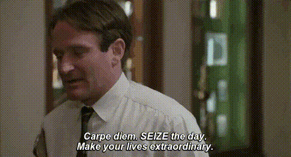

Maneesh Aare

“I went into the woods because I wanted to live deliberately. I wanted to live deep and suck out all the marrow of life. To put to rout all that was not life; and not, when I had come to die, discover that I had not lived.” —Neil Perry